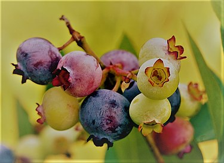

BlueBell BlueBell
BlueBell BlueBell 
블루베리(영어: Blueberry)는 쌍떡잎식물 진달래목 진달래과의 식물이다. 북아메리카가 원산지로 형태가 포도와 유사하다. 북아메리카 원산으로 20여 종이 알려져 있고 한국에도 정금나무, 산앵도나무 등이 있다. 산성토양에서 잘 자라며, 염기성과 중성토양에서는 잘 자라지 않는다. 열매는 둥글고 1개가 1~1.5g이며 색은 짙은 하늘색, 붉은 빛을 띤 갈색, 검은색이고 겉에 흰가루가 묻어 있다. 미국 타임지가 선정한 10대 슈퍼푸드 중 하나이다.